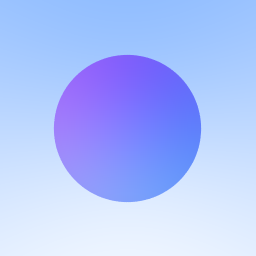
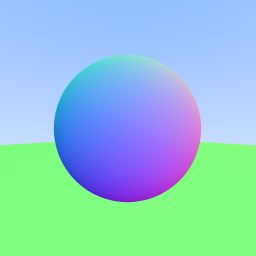
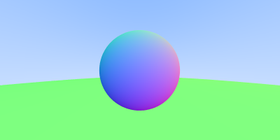
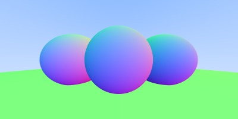
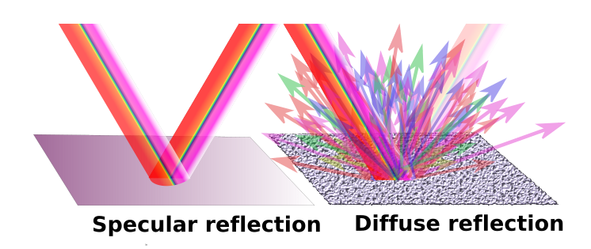

in the previous blog post of this series, we have successfully rendered a sphere and shaded it using surface normals. in this blog post, we will work with different materials (mainly diffuse and metallic materials, i will cover dielectric materials in another post)
before starting to write out the logic for different materials, let's design an interface which encapsulates all the possible hittable objects i.e. objects on to which rays can strike, within our path tracer.
type HitRecord struct {
N, P Vector
T float64
}
type Hittable interface {
Hit(r Ray, tMin, tMax float64) (bool, *HitRecord)
}
Hittable interface encapsulates all the structs which
implement Hit function with that specific function signature.
Hit function takes in a ray which is shot towards it and also
an interval of t (i.e. tMin and
tMax) and returns a boolean which indicates whether the ray
hit the object or not and also a HitRecord.
a hit record contains the metadata related to the rays which hit the
object. let me now explain which metadata is exactly being stored
in HitRecord, as it is pretty hard to guess from the single
lettered fields.
T is the value of t for which P(t) = Qt + d
ray hits that object. Hit function only considers those
values of t which lie in the range of tMin to
tMax i.e. tMin <= t <=
tMax.
P is the vectorical representation of the ray i.e. P(t) at
t = T.
N is the surface normal of the object at the hitpoint.
currently, we have the logic responsible for rendering a sphere within
RayColor function.
func RayColor(r Ray) Vector {
center := NewVector(0, 0, -1)
radius := 0.5
found, p := r.HitSphere(center, radius)
if found {
normal := r.At(p).SubtractVector(center).UnitVector()
return NewVector(normal.X+1, normal.Y+1, normal.Z+1).MultiplyScalar(0.5)
}
unitVec := r.Direction.UnitVector()
t := 0.5 * (unitVec.Y + 1)
color := NewVector(1, 1, 1).MultiplyScalar(1.0 - t).AddVector(NewVector(0.5, 0.7, 1.0).MultiplyScalar(t))
return color
}
let's design a simple struct which stores all necessary data related to a
sphere (which is center and radius, at the moment) and also implements
Hittable interface.
type Sphere struct {
Centre Vector
Radius float64
}
func NewSphere(centre Vector, radius float64) Sphere {
return Sphere{
Centre: centre,
Radius: radius,
}
}
func (s Sphere) Hit(r Ray, tMin, tMax float64) (bool, *HitRecord) {
cq := r.Origin.SubtractVector(s.Centre)
a := r.Direction.DotProduct(r.Direction)
b := 2 * r.Direction.DotProduct(cq)
c := cq.DotProduct(cq) - (s.Radius * s.Radius)
d := b*b - 4*a*c
if d >= 0 {
hitRecord := &HitRecord{}
t := (-b - math.Sqrt(d)) / (2 * a)
if tMin <= t && tMax >= t {
hitRecord.T = t
hitRecord.P = r.At(t)
hitRecord.N = hitRecord.P.SubtractVector(s.Centre).DivideScalar(s.Radius)
return true, hitRecord
}
t = (-b + math.Sqrt(d)) / (2 * a)
if tMin <= t && tMax >= t {
hitRecord.T = t
hitRecord.P = r.At(t)
hitRecord.N = hitRecord.P.SubtractVector(s.Centre).DivideScalar(s.Radius)
return true, hitRecord
}
}
return false, nil
}
the logic is pretty much same as HitSphere function but
rather than returning the hitpoint value, we're returning the hit record.
func (r Ray) HitSphere(center Vector, radius float64) (bool, float64)
func (s Sphere) Hit(r Ray, tMin, tMax float64) (bool, *HitRecord)and this time, we are calculating both the roots of the quadratic equation. if the 1st root didn't lie in the range then check for the 2nd one. as in the later parts of the blog post, we will render multiple spheres then we need to caluclate both the roots else the image won't render as excepted.
let's utilize this new Sphere struct to render the
"bluish-purple" sphere that we rendered in the previous post.
we need to update the RayColor function to accept anything
that implements the Hittable interface and use its
Hit
method.
func RayColor(r Ray, h Hittable) Vector {
found, hitRecord := h.Hit(r, 0, math.MaxFloat64)
if found {
return hitRecord.N.AddVector(NewVector(1, 1, 1)).MultiplyScalar(0.5)
}
unitVec := r.Direction.UnitVector()
t := 0.5 * (unitVec.Y + 1)
color := NewVector(1, 1, 1).MultiplyScalar(1.0 - t).AddVector(NewVector(0.5, 0.7, 1.0).MultiplyScalar(t))
return color
}
create a new sphere using NewSphere function (sorta like
constructor for Sphere struct) as follows:
sphere := NewSphere(NewVector(0, 0, -1), 0.5)and pass it into RayColor function to get the color
color := RayColor(ray, sphere)on running the script, you should see the same "bluish-purple" sphere.

currently, our path tracer can render only one hittable object at once. let's make an abstraction which will act like a list of all the hittable objects in the rendered image, aka scene.
type Scene struct {
Elements []Hittable
}
func NewScene(elements ...Hittable) Scene {
return Scene{
Elements: elements,
}
}
let's also implement the Hit method onto
Scene struct, which takes in a ray as a parameter and loop
throughs all the hittable objects and return the hit record for the one
which the ray hits.
func (s Scene) Hit(r Ray, tMin, tMax float64) (bool, *HitRecord) {
hitAnything := false
closest := tMax
record := &HitRecord{}
for _, e := range s.Elements {
hit, tempRecord := e.Hit(r, tMin, closest)
if hit {
hitAnything = true
closest = tempRecord.T
record = tempRecord
}
}
return hitAnything, record
}now let's create a scene with the bluish-purple sphere and a floor.
sphere := NewSphere(NewVector(0, 0, -1), 0.5)
floor := NewSphere(NewVector(0, -100.5, -1), 100.0)
scene := NewScene(floor, sphere)
as we have implemented Hit function to
Scene struct, we must be able to pass scene to
RayColor function.
color := RayColor(ray, scene)
rgb = rgb.AddVector(color)on running the script, you'll see a beautiful lil' sphere and green colored floor.

the current image size is 256x256, let's change it to 400x200 to capture a bit more of the floor on to the image.
imageWidth := 400
imageHeight := 200
viewportWidth := 4.0
viewportHeight := 2.0
the ratio between viewportWidth and
viewportHeight must be always equal to the aspect ratio, if
the pixels are equally spaced in the viewport.

lovely!
here is another image with silly sphere army.
sphereOne := NewSphere(NewVector(0, 0, -1), 0.5)
sphereTwo := NewSphere(NewVector(1, 0, -1.5), 0.6)
sphereThree := NewSphere(NewVector(-1, 0, -1.5), 0.6)
floor := NewSphere(NewVector(0, -100.5, -1), 100.0)
scene := NewScene(sphereOne, sphereTwo, sphereThree, floor)
let's now implement different types of materials, which can applied on to the sphere.
there are mainly two types of reflection which a light ray undergoes in the real world - specular and diffuse. specular reflection is the regular type of reflection which you might have studied in your high school, where the angle of incidence is equal to the angle of reflection, i.e., the laws of reflection hold true. in diffuse reflection, the reflected ray and incident ray are not symmetrical about the normal; the reflected ray bounces off in a random direction from the surface.

to simulate the light ray bouncing off in random direction, we can just generate random unit vector and check if direction of the surface normal at the hitpoint and the random unit vector are same, if yes then change the direction of the reflected ray to that unit vector.
func RandomInRange(min, max float64) float64 {
return min + (max-min)*rand.Float64()
}
func RandomUnitVector() Vector {
for {
v := NewVector(RandomInRange(-1, 1), RandomInRange(-1, 1), RandomInRange(-1, 1))
if math.MinInt64 < v.Length()*v.Length() && v.Length()*v.Length() <= 1 {
return v.UnitVector()
}
}
}
func RandomOnHemisphere(normal Vector) Vector {
onUnitSphere := RandomUnitVector()
if onUnitSphere.DotProduct(normal) > 0 {
return onUnitSphere
} else {
return onUnitSphere.MultiplyScalar(-1)
}
}RandomInRange function returns a random floating point
number in the range of [min, max).
RandomUnitVector function returns a random unit vector.
RandomOnHemisphere function returns a random unit vector in
the direction of the hemisphere where the surface normal at that
hitpoint is pointing to.